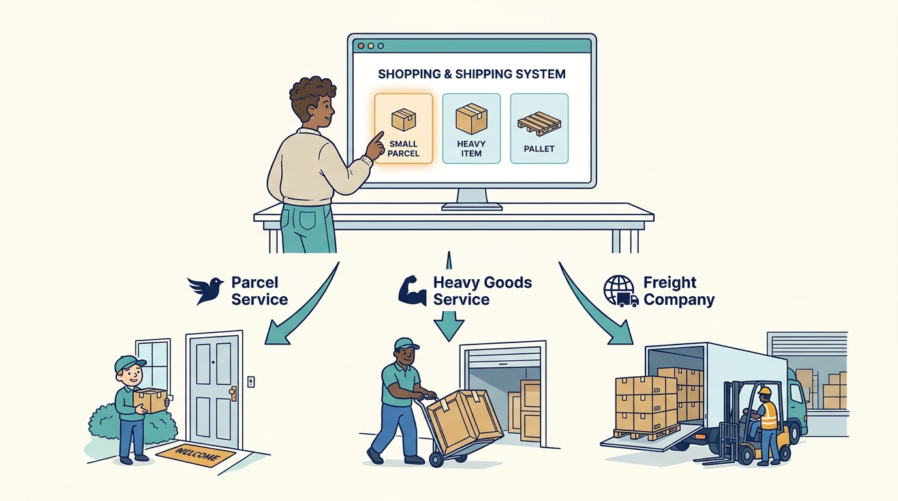
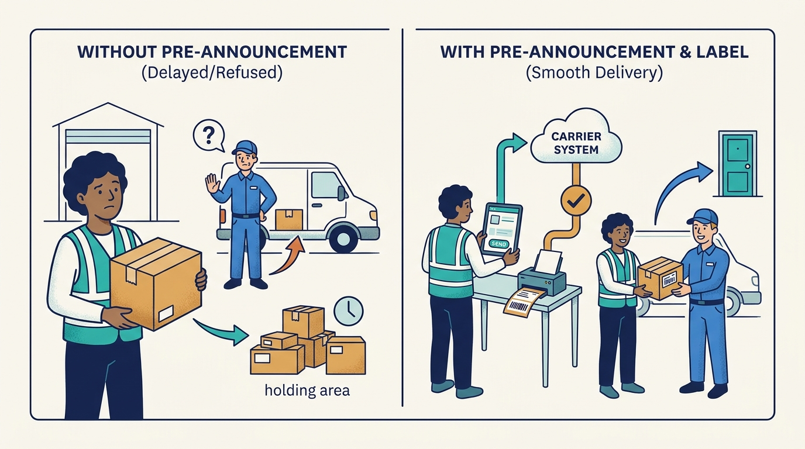
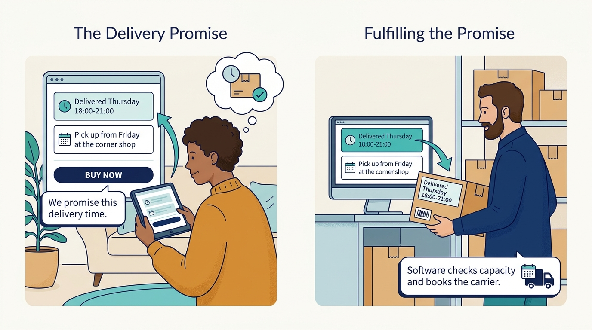
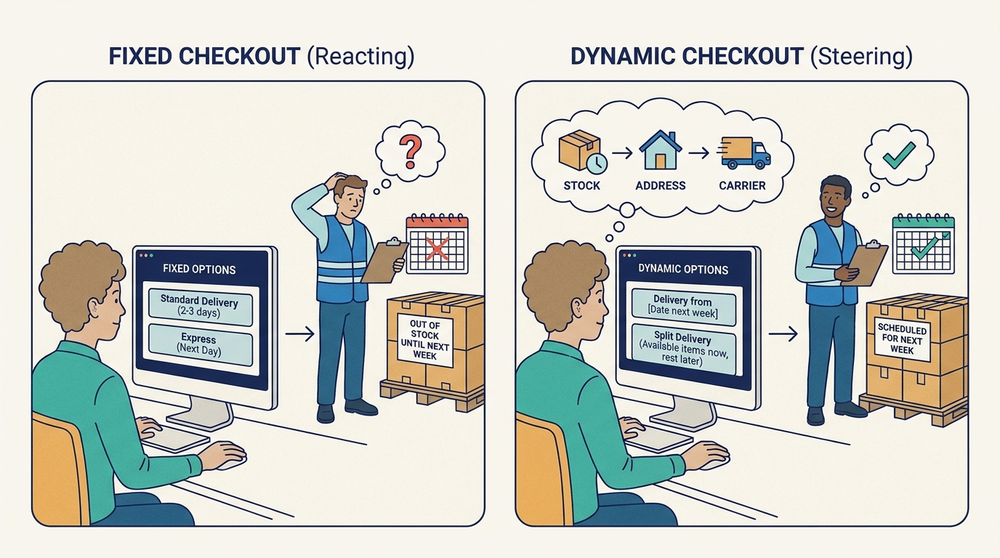
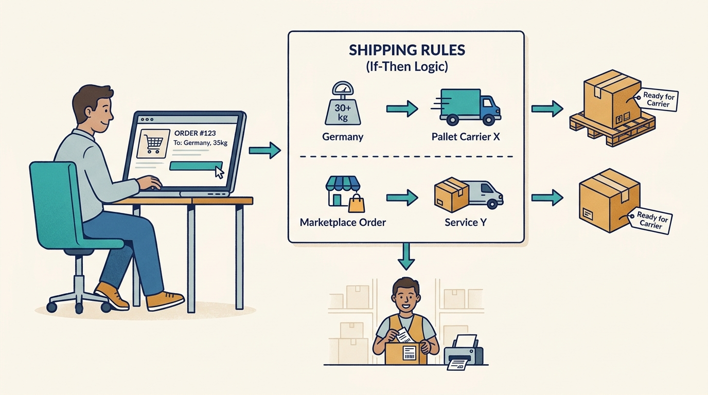
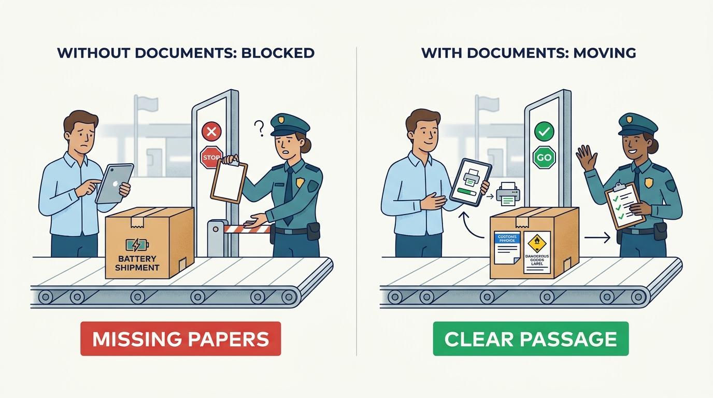
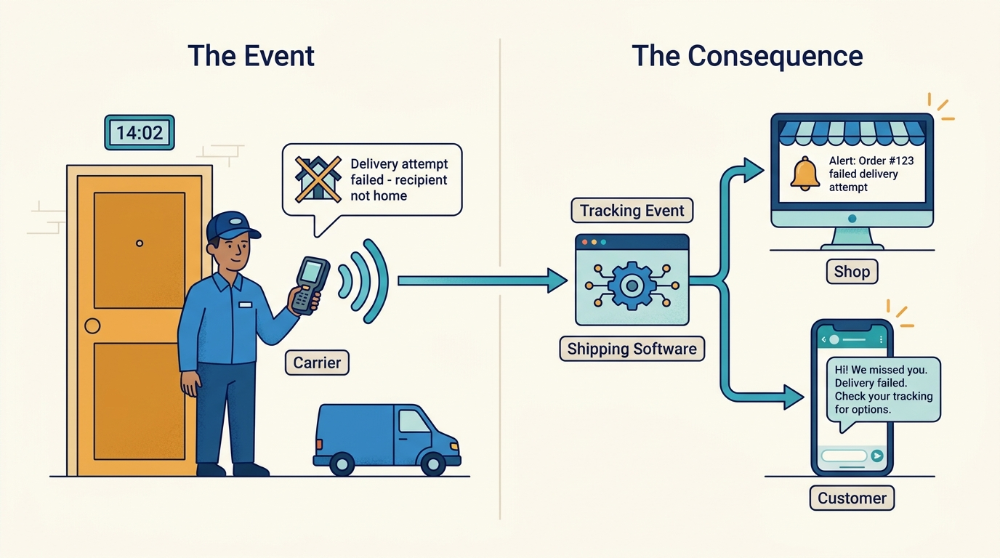
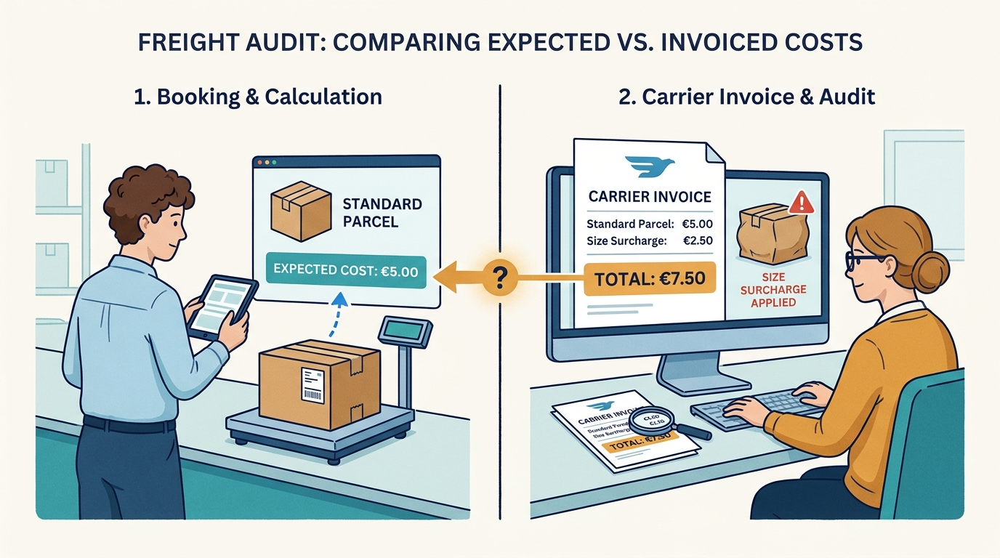

The shopper or recipient
Chooses a delivery option, receives the parcel and sometimes returns it.
What matters to them
Knowing when it arrives, choosing where, paying little, and returning easily.
A beginner's guide
Who this is for
A curious adult coming from a different field, with no assumed knowledge of logistics or e-commerce.
What this guide covers
Covers the software that sits between a shop's order systems and the companies that physically carry parcels and pallets: choosing delivery options at checkout, booking carriers, printing labels and documents, tracking, returns and checking transport costs. Examples come from the Netherlands and the wider European market, where DeliveryMatch operates. Warehousing (picking and packing), the carriers' own operations and customs law in detail are left out.
01
Explain why a shop that ships with several carriers needs a layer of software between its systems and the carriers.
Distinguish a delivery promise made at checkout from the delivery itself, and explain why stock and capacity matter for that promise.
Describe what happens between 'order placed' and 'parcel delivered', including documents and tracking.
Explain how shippers, carriers, fulfilment companies and software partners each gain from such a platform, and where their interests conflict.
Recognise the main hard problems: keeping promises, controlling cost, handling exceptions and returns, and integrating many systems.
02
When you buy something online, the shop has to decide how your order travels: which delivery company (a 'carrier'), which service (next day, evening, pickup point), from which warehouse, at what cost. Then someone must tell the carrier the parcel is coming, print a label, and keep you informed. Shipping and carrier management software does this work for many orders at once, connecting the shop's systems with dozens or hundreds of carriers.
Delivery is the part of online shopping the customer physically experiences. A wrong promise, a lost parcel or a painful return costs the shop the next sale, while transport is one of its largest costs. For businesses shipping thousands of parcels a day, doing this by hand in carrier websites is slow, error-prone and impossible to control.
03
Chooses a delivery option, receives the parcel and sometimes returns it.
What matters to them
Knowing when it arrives, choosing where, paying little, and returning easily.
Sells the goods, makes the delivery promise and pays for transport; buys the shipping software.
What matters to them
Keeping promises at the lowest sensible cost without extra staff.
Stores and ships goods on behalf of many shops.
What matters to them
Throughput, getting new client shops live quickly, and earning a margin on shipping.
Physically moves parcels or pallets; a broker resells capacity from several carriers.
What matters to them
Receiving clean, pre-announced shipments and being paid correctly.
Makes the shop's webshop, ERP (business administration) or warehouse system and connects it to the shipping platform.
What matters to them
Offering shipping features without building carrier links themselves.
Operates the software in the middle and maintains connections to carriers and systems.
What matters to them
Reliable connections, happy shippers, and growth in the volume flowing through.
04
Using several carriers through one system, choosing per shipment.

No single carrier is best for everything; choice lowers cost and risk, but only if switching is easy.
Click the image to open it in a new tab.For example
A shop sends small parcels with one carrier, heavy items with another, and pallets with a freight company - all from the same screen.
Why it matters
No single carrier is best for everything; choice lowers cost and risk, but only if switching is easy.
Telling the carrier in advance about a shipment and receiving a tracking number and a barcode label to stick on it.

A parcel without correct pre-announcement may be refused or delayed at the depot.
Click the image to open it in a new tab.For example
The warehouse scans an order; the system sends the data to the carrier and prints the label within seconds.
Why it matters
A parcel without correct pre-announcement may be refused or delayed at the depot.
What the shop tells the customer about when and how the parcel will arrive, made at checkout.

The promise is made before the parcel exists; if stock or capacity are wrong, the shop breaks its word.
Click the image to open it in a new tab.For example
'Delivered Thursday between 18:00 and 21:00' or 'Pick up from Friday at the corner shop'.
Why it matters
The promise is made before the parcel exists; if stock or capacity are wrong, the shop breaks its word.
A checkout that calculates delivery options live from stock, address, carrier services and capacity instead of showing fixed choices.

It turns logistics from reacting after the order ('push') into steering at the moment of purchase ('pull').
Click the image to open it in a new tab.For example
If one item comes from a supplier next week, the checkout only offers dates from next week, or a split delivery.
Why it matters
It turns logistics from reacting after the order ('push') into steering at the moment of purchase ('pull').
If-then logic that decides carrier, service and price per order.

Rules capture the shop's strategy and customer agreements so staff do not have to remember them.
Click the image to open it in a new tab.For example
'Orders above 30 kg to Germany go by pallet carrier X; orders from the marketplace use service Y.'
Why it matters
Rules capture the shop's strategy and customer agreements so staff do not have to remember them.
Papers or data that let goods travel legally: consignment notes (CMR) for road freight, customs invoices for export, dangerous-goods (ADR) declarations.

Missing documents stop shipments at borders or depots.
Click the image to open it in a new tab.For example
A battery shipment to Switzerland needs both a customs invoice and dangerous-goods labels.
Why it matters
Missing documents stop shipments at borders or depots.
Status messages from the carrier: collected, sorted, out for delivery, delivered, failed.

They drive customer messages and let the shop act before the customer complains.
Click the image to open it in a new tab.For example
'Delivery attempt failed - recipient not home' arrives at 14:02.
Why it matters
They drive customer messages and let the shop act before the customer complains.
Comparing what the carrier invoices with what the shipment should have cost.

Small overcharges across thousands of parcels add up; without expected costs there is nothing to compare.
Click the image to open it in a new tab.For example
The invoice adds a size surcharge on a parcel that was booked as standard size.
Why it matters
Small overcharges across thousands of parcels add up; without expected costs there is nothing to compare.
05
This is a selective, mostly Dutch and European view; other markets developed differently.
Shops booked shipments in each carrier's own website or software and printed labels per carrier.
What this helps explain
Every new carrier meant a new screen and a new process, which kept most shops on one carrier.
E-commerce growth brought independent multi-carrier platforms; in the Netherlands, research into consumers' delivery wishes (by DeliveryMatch's founder from 2009 to 2012) led to the idea that delivery choice belongs in the checkout. DeliveryMatch was founded in 2013 and its first customer went live in 2014.
What this helps explain
Delivery became a sales feature, not just a cost.
Platforms connected to hundreds of carriers and business systems; pickup points, lockers and evening delivery spread across Europe.
What this helps explain
Choice exploded, so deciding automatically between options became the main value.
Consolidation: larger groups formed (for example nShift in 2021 from several Nordic and Dutch vendors) and software groups such as Katapull combined complementary products - ERP, point of sale, marketplaces, EDI, returns, warehouse and shipping.
What this helps explain
Shipping software increasingly competes as part of an ecosystem rather than as a standalone tool.
06
Fictional characters: Sanne runs operations at a mid-size Dutch photography webshop that sells through its own site and a marketplace. The bag is in the shop's warehouse; the tripod is held by a supplier that ships directly. A shopper, Jeroen, orders both on a Tuesday evening.
At checkout the platform checks stock: the bag is available now, the tripod ships from the supplier tomorrow. It offers Thursday home delivery for both parcels or a pickup point, with prices and an estimated CO2 figure.
Why this step matters
The promise is based on real stock and carrier services, so it can be kept.
The webshop passes the order to the platform; Jeroen's address is checked and rules choose carriers for the warehouse parcel and the supplier parcel.
Why this step matters
No one re-types the order or decides manually.
Next morning a packer scans the bag's order; the platform pre-announces it to the carrier, prints the label and sends Jeroen a branded message. The supplier books its parcel through the same platform.
Why this step matters
One scan replaces several manual steps; both parcels are visible in one place.
On Wednesday night the tripod parcel misses a sorting connection. The tracking event triggers an alert in Sanne's exception list and a message to Jeroen with the new day.
Why this step matters
The shop informs the customer before he asks.
The bag is the wrong size. Jeroen registers a return in the shop's portal, chooses a drop-off point and prints a return label.
Why this step matters
An easy return keeps him as a customer; the reason code tells the shop something about its size descriptions.
At month end the carrier's invoice is compared with the expected cost stored at booking; an unexpected surcharge is flagged for dispute.
Why this step matters
The shop pays what it agreed, not what was billed by mistake.
The outcome
Jeroen received his order as promised (one parcel a day late, but announced), returned an item without effort, and will probably order again. Sanne's team touched the order only to handle the exception, and the shop knows what the delivery really cost.
07
Automation removes manual bookings and errors; reliable promises raise conversion and repeat purchases. Shippers pay a subscription and often usage-based fees (pricing is not published by DeliveryMatch).
For example
A shop that books thousands of parcels a week no longer needs staff copying addresses into carrier websites.
A platform makes it easy to add a carrier - and just as easy to move volume away. Carriers gain reach but lose some lock-in.
For example
A rule change can move all heavy parcels from one carrier to another overnight.
Fulfilment companies buy transport at their rates and re-sell it to client shops; software that calculates sales rates and audits invoices protects that margin.
For example
A 3PL charges a client EUR 5.50 per parcel while paying the carrier less; freight audit catches surcharges that would erase the difference (illustrative figures).
ERP, warehouse and webshop vendors embed shipping instead of building carrier links; in a group like Katapull, connected products make the whole offer stickier.
For example
A warehouse system sends shipment requests to the shipping platform and receives labels back.
08
The promise is made before goods are picked, using stock data from other systems and carrier capacity that changes daily.
The competing needs
Fast promises sell better; safe promises are kept more often.
In practice
A checkout shows next-day delivery for an item that is actually at a supplier.
How people respond, and its limits
Stock-aware promise calculation and cut-off rules; it is only as good as the stock data it receives.
Every carrier, webshop, ERP and marketplace has its own interface, and they change.
The competing needs
More connections attract customers but cost constant maintenance.
In practice
A carrier changes its label format and labels are rejected at the depot.
How people respond, and its limits
A uniform internal model with adapters per carrier and system; still needs a dedicated team.
Tariffs, zones, fuel and size surcharges differ by carrier and change often; invoices arrive weeks later.
The competing needs
Detailed cost models take effort to maintain; simple ones miss surcharges.
In practice
Oversize surcharges on 2% of parcels double the expected monthly cost increase.
How people respond, and its limits
Calculate expected cost at booking and audit invoices automatically; depends on accurate rate cards.
Delays, failed deliveries and returns are irregular and involve several parties.
The competing needs
Generous returns win customers but cost money.
In practice
A parcel shows 'delivered' but the customer has not received it.
How people respond, and its limits
Normalised tracking, alerts and self-service returns portals with rules for return costs.
09
A better way to understand it
Label printing is the visible part; the value lies in deciding the carrier, making a keepable promise, informing the customer and controlling cost.
A better way to understand it
Many consumers prefer certainty and choice over speed; DeliveryMatch cites research that most will wait several days if the delivery moment is clear.
A better way to understand it
With a platform in the middle, more carriers mainly add choice; the complexity sits in the platform's connections and rules.
10
Shipping software sits between order systems and carriers and turns each order into a booked, labelled, tracked shipment.
The delivery promise is made at checkout, before the parcel exists, so it depends on stock and capacity data.
Rules and automatic selection replace human decisions per order; exceptions are where people still add value.
Cost control requires knowing the expected cost of each shipment before the invoice arrives.
Value grows with connections - to carriers, business systems and partner products - which is why ecosystems like Katapull matter.
11
Pause and think through each situation, then open the answer.
Because one item is not in stock or ships from another location, so the complete order can only be delivered later.
The reasoning
A stock-aware promise looks at when the whole order can be delivered, unless split delivery is allowed.
The expected cost of each shipment calculated at booking from the agreed rates.
The reasoning
Without an expected cost per shipment there is nothing to compare the invoice line with.
A tracking event from the carrier triggered an exception alert and a message.
The reasoning
Normalised tracking events let the platform spot deviations from expected milestones.
It gains access to many shippers but can lose volume quickly when a rule changes.
The reasoning
The platform lowers switching costs in both directions.
12
Which share of your orders is booked without anyone touching them?
How do you decide which carrier gets which parcel, and who maintains those rules?
How often is the delivery date shown at checkout actually met?
How do you check carrier invoices today?
Which of your systems would need to connect to a shipping platform?
13
A concrete feature list of a European shipping platform.
Explains the push-to-pull idea in Dutch.
Shows how shipping fits with ERP, point of sale, marketplaces, EDI, returns and warehouse software.
How a large European delivery management group was formed.